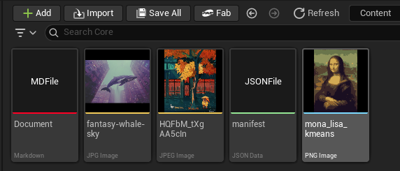

Discovers, displays, and previews non-Unreal asset files directly inside Unreal Engine's Content Browser.

Project File Browser brings raw project files (.png, .jpg, .jpeg, .json, .txt, .md, and any configured custom extensions) into Unreal Engine's Content Browser alongside standard .uasset files without requiring importation or asset conversions.
All settings are located under Edit > Project Settings > Editor > Project File Browser.
| Property | Type | Default | Description |
|---|---|---|---|
bEnableFileBrowser |
Boolean | true |
Enables or disables the custom project file data source. |
MonitoredExtensions |
Array | PNG, JPG, JPEG, JSON, TXT | List of extension configuration entries. |
| Field | Type | Description |
|---|---|---|
| Extension | FString | File extension without leading dot (e.g. png, md, json). |
| DisplayName | FText | Display name shown on the Content Browser tile (e.g. Markdown Document). |
| AccentColor | FLinearColor | Color strip displayed at the bottom edge of the tile. |
| bGenerateImageThumbnail | Boolean | If true, parses image pixels and renders the file as a thumbnail. |
icon.png, notes.md, data.json) into your project's Content/ directory.Note: Modifying an image in external tools (like Photoshop or Aseprite) will update the thumbnail in the Content Browser on save.
ContentBrowserFileDataSource plugin.